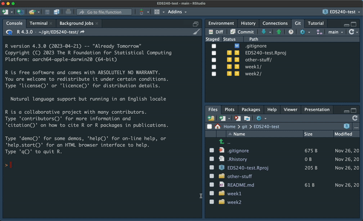

Pre-lecture Prep
A. Install required packages
install.packages("palmerpenguins") # a package containing the `penguins` data set, which we'll use for plotting practice
install.packages("tidyverse") # a collection of packages used for data wrangling / manipulation and visualization (including {ggplot2})
install.packages("patchwork") # makes it super easy to combine individual plots into a single graphicB. Create & organize your EDS-240-class-examples repository
We’ll be coding together quite a bit throughout this course. To stay organized, we’ll complete all of our in-class examples in one repository (repo). Setup your repository following these steps:
- Create and clone a GitHub repository named
EDS-240-class-examples(or something that makes sense for you). Step-by-step instructions are provided, below, if needed:
Create a folder for each week (e.g.
week1/,week2/,week3/, etc.) inside your repository’s root directory to help keep all the various files that we’ll download / create organized. This consistent naming scheme will also make it easy to add large files (e.g. data files) to your.gitignorefile, which is automatically created when you clone your repo.Update your
.gitignorefile to prevent yourself from accidentally committing data files (GitHub limits the size of files allowed in repos). Open your.gitignorefile and add the following:
- Fill out your repo’s README, referencing the MEDS README Guidelines.
C. Download the .qmd template
Template .qmd files will be provided alongside (most) lecture slides to help keep us organized and on track throughout class. They are available for download directly from GitHub at the link(s) provided in the Lecture Materials table (below). Look for the download button at the top right corner of the file (it looks similar to this, ). Please download all necessary templates and save them to the appropriate EDS-240-data-viz-examples/weekX folder before each class.
Lecture Materials
| Lecture slides | Code-along template | Code-along key |
|---|---|---|
| Lecture 1.1: course logistics & syllabus | NA | NA |
| Lecture 1.2: data viz intro | NA | NA |
Lecture 1.3: {ggplot2} review |
1.3 template | 1.3 key |
Pre-lab Prep
A. Install required packages
install.packages("here") # for reproducible, relative file paths
install.packages("janitor") # tools for cleaning dirty dataB. Download the data
Save data to your class repo at EDS-240-class-examples/week1/data/:
| Dataset title | Download link | Notes |
|---|---|---|
| HoneyBee Colonies | Download from this google drive | While the original bee stressor data come from the USDA, we will be using a compiled version of this data that come from the TidyTuesday organization, found here. In order to achieve the goal of data wrangling in this week’s lab, the data from TidyTuesday was ‘messified’ using the{messy} and {tidyverse} package in R. |
C. Add data to .gitignore
We don’t want to push any data in our repo to GitHub (GitHub enforces file size limits, and you’ll run into some serious headaches when you try to push a file that’s too big). To avoid doing this, we can add our data files to our .gitignore file, which, as the name implies, is a collection of files that we want Git to ignore. Open up your .gitignore file and add the following line (anywhere is fine, but it makes sense to add it beneath the last line):
.gitignore
# ignore any folder named `data/` within folders named `week__` (* acts as a wildcard)
/week*/data/Notice that when you Save your modified .gitignore file, untracked data files at the specified file path disappear from your Git tab in RStudio, and a modified .gitignore file appears in it’s place (this is what we want!). Stage / add, commit, and push .gitignore.
TipA gif of this whole process (in case it’s helpful!)

An example repo with three folders: week1/, week2/, and other-stuff/. Each of those folders has a subfolder named data/, and each data/ folder contains a .csv file. Adding the line, /week*/data/ to the .gitignore tells Git to ignore folders (and their contents) named data/ that are within a parent folder named week__ (the * acts as a wildcard). If we wanted to ignore all three data/ folders (including other-stuff/data/), we can instead include /*/data/ to our .gitignore.
D. Prepare a week1-lab.qmd file
Add a new blank file to your class repo – you’ll complete your lab exercises here. For organization’s sake, it should live in the following location: EDS-240-class-examples/week1/week1-lab.qmd. Fill out the necessary YAML information (title, author, date + any other information you find helpful).
Lab Materials
| Lab Slides | Exercise instructions | Exercise solutions |
|---|---|---|
| Lab 1 slides: data wrangling | Lab 1 exercise: wrangle bee colony stressor data | Lab 1 solution |
Assignment Reminders
| Assignment Type | Assignment Title | Date Assigned | Date Due |
|---|---|---|---|
| SR | Pre-course reflection (SR #1) | Wed 01/07/2026 | Fri 01/09/2026, 11:59pm PT |
| HW | Homework Assignment #1 | Wed 01/07/2026 | Wed 01/14/2026, 11:59pm PT |